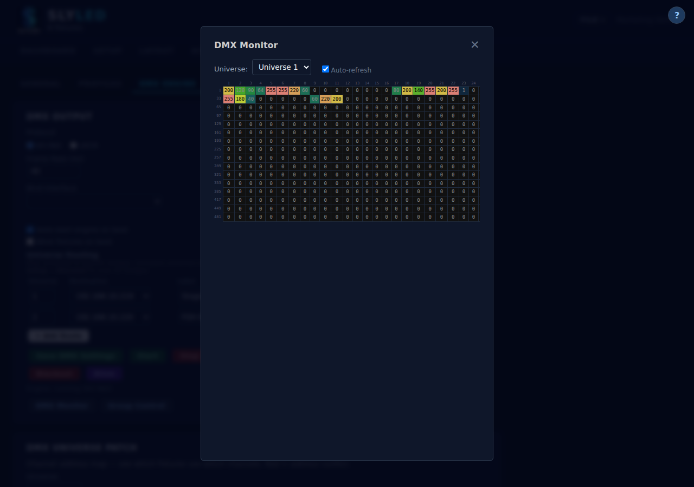

Screenshots


Every DMX channel value in real time, across all universes, in a 32×16 grid. Click any cell to override a value. Color-coded by intensity. Fixture profile labels show what each channel does — 'Gobo 3', 'Strobe speed', 'Dimmer' — so you can diagnose patching issues instantly.

Download SlyLED free. MIT licence. No subscription, no account, no cloud.